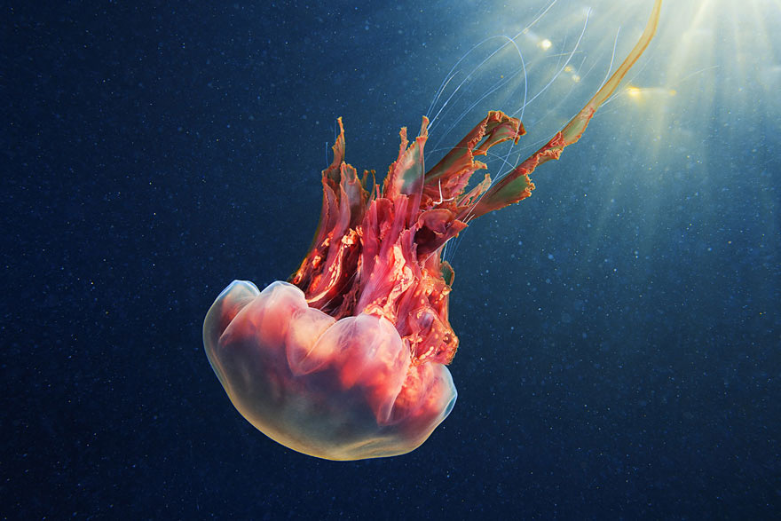
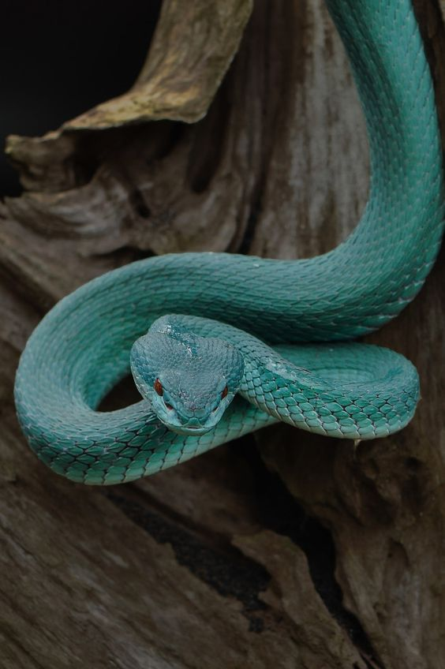
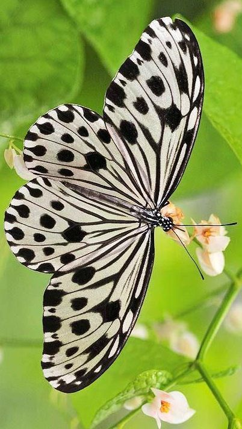
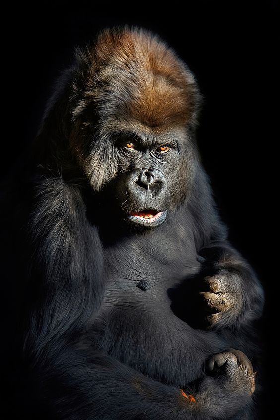

BREEZY BIRDS

Sri Lanka has a diverse range of Birds, 225 species to be precise.
Our zoo is largely decorated bith a beautiful burst of bird diversity,
With Pink Flamingoes and Ostriches nested right at the entrance, and more exotic birds like Cockatoos
and Emus at the end of the enclosure.
All these birds are in large, well landscaped areas, built accordingly to their
natural habitat,where they can fly and socialize freely.
AMAZING AQUATICS

The Aquatic Facility of the Zoo has to be the most amazing attraction of all.
With Oceanic Creatures, like Sea Turtles and Anemones directly from the
Coasts and Corals of Mother Lanka,to more far-reached animals, like the
Manta Ray and the Sting-Ray, all living harmoniously in our newly-refurbished
aquarium.
RADICAL REPTILES

32 of the most amazing yet dangerous reptiles of Ceylon plus
foreign species, are on display
With Gavials and Turtles living in a water-based habitat and
Anacondas and Tree Snakes in a sunny enclosure.
The Setup of some of these creatures habitats are in deep greenery therefore,
the lush plants that accompany the reptiles habitats are a must-see sight!
GENTLE GIANTS

With our direct partnership with Wilpattu National Park,
Our Range of Elephant Species includes a lot of
rescue elephants, especially from illegal poaching.
BEAUTIFUL BUTTERFLIES

The color of the butterflies plus the cool scenery is one of our main attractions in the Zoo.
housing more than 30 species of local butterflies, you can also observe their life cycles,
from cocoon to butterly.
You could also see them during feeding time where the butterflies patiently
sip nectar from flowers, or consume the sweet fruits provided fro them.
PERKY PRIMATES

The most liveliest attraction in our zoo, with over 16 species of primate,
Swingy Orang-Utans and Cheeky Purple-Faced Monkeys.
The babies are the most cutest sight to see, watch them as they're taking their first swing,
or learning a valuable lesson as not to mess with the older primates.